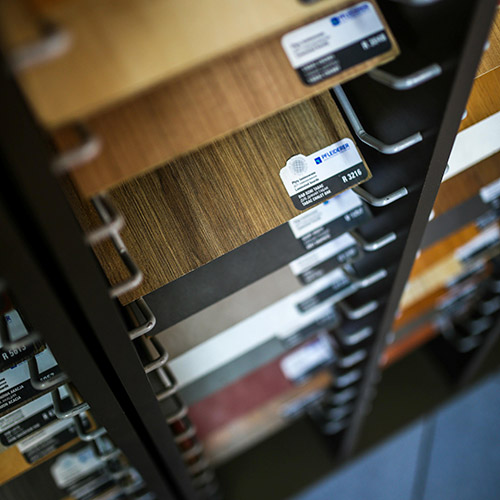
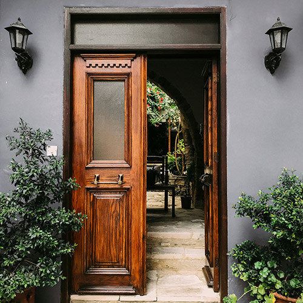
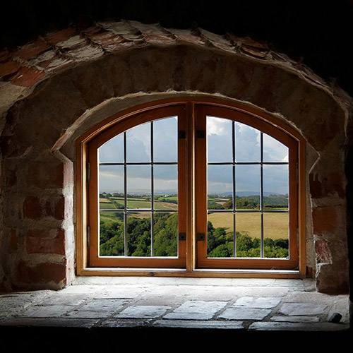
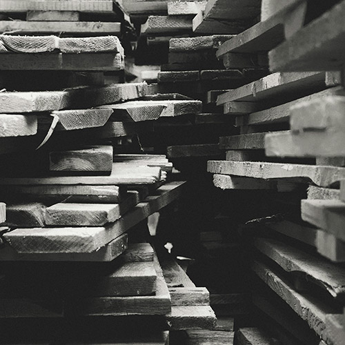

Unsere Firma bietet Ihnen bei der Wahl des Dekors eine große Auswahl an. Von einfarbig, matt, Hochglanz, Holzdekor über Metall- und Betonoptik bis hin zu Echtholzfurnier und Vollholz. Auch bei der Gestaltung des Interieurs gibt es viele Möglichkeiten wie Fachböden, Schubkästen, Kleiderstangen, Formulareinsätze, Einbautresore, Schuhregale, Tablarauszüge, Beleuchtung und vieles mehr. Des Weiteren bieten wir auch die Reparatur und Instandhaltung Ihrer aktuellen Möbel, Türen und Fenster an.
   